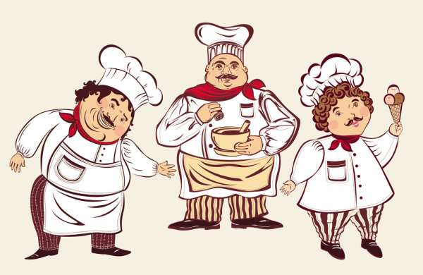

Too Many Cooks Spoil the Broth
There are men and men and every stone is not a gem. No two men can be the same. They differ in one aspect or the other. If both are talented, they may not be equally so. When we take up a project we need a team of workers. But to avoid confusion, we all divide responsibilities. Otherwise there is bound to be confusion. At one job, there should be one hand. If the boat is rowed by more than one boatman, they should have a perfect and clear understanding. Otherwise each one will do so differently and cause a mishap. In a kitchen if more than one cook prepare the same dish, there is possibility of the dish being spoiled, if all are allowed to have their say. Every one’s work is no one’s responsibility. Each person does the job the way he likes. Result is nothing but a big chaos. The pigeons in the net also left the net to be flown and carried by others. The net came down to earth, as each pigeon left his weight to the carried by others. To sum up, we can say that too many hands always create confusion. In a house with too many servants or masters, there wiil be no order. So, cooks in a kitchen, if too many, spoil the dish.